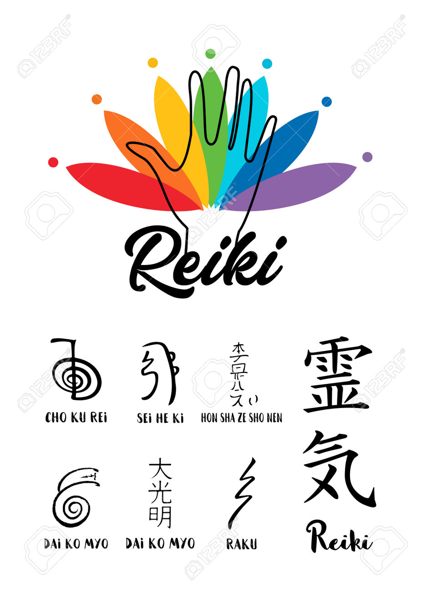
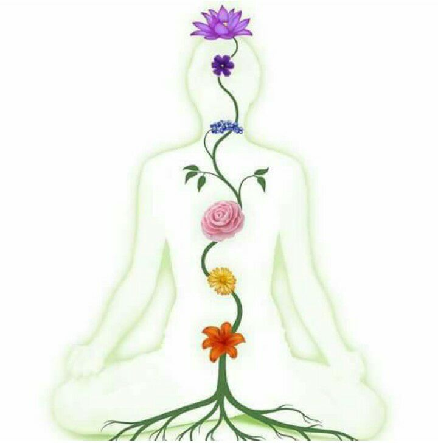
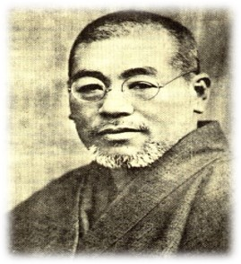

Limpieza
Armonización
Sanación
Liberación
Abundancia
Esta energía es la energía de la vida y restablece los conceptos del amor, libertad y
certeza. La llamaremos Energía Vital Universal o lluvia de luz en su idioma original el
japonés es una palabra compuesta Reiki.
¿Que es el reiki?
El Reiki es una energía superior de:

Estimula las fuerzas de regeneración internas y propias. Ayuda al sistema inmune.
Mejora las funciones metabólicas.
Reduce el estrés, la depresión y la falta de vitalidad.
Genera bienestar y mejora la autoestima.
Produce equilibrio y aumenta la claridad mental y la concentración.
Mejora los casos de insomnio e incita el sueño.
Equilibra la energía en el embarazo y el postparto.
Es auxiliar en el tratamiento de migrañas, dolores menstruales, estreñimiento,
bulimia y
anorexia, entre otros.
Beneficios Del Reiki
Los beneficios del Reiki son variados y podrían resumirse en que este reduce el dolor físico y emocional al desbloquear la energía ki bloqueada. Pasamos a detallar algunos de los diversos beneficios que se le atribuyen a esta práctica:

Creador del reiki
El gran maestro contemporáneo redescubridor fue Mikao Usui, lo llamaba “El Fuego”. Nacio en Japon en la década del 1800 y se retira del plano a los 62 años también en Japón. Algunos dicen que era Cristiano, otros que era Budista.